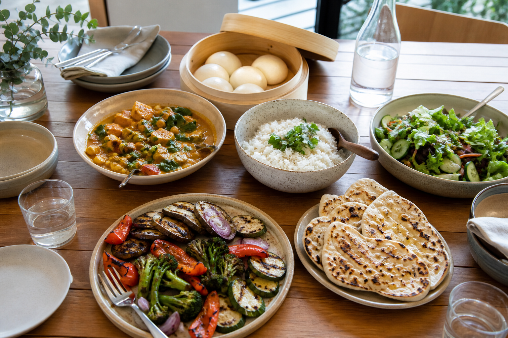
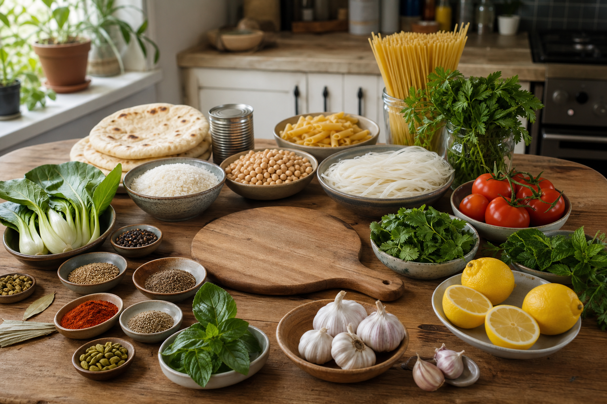

1. Learn
Read three named theory sections and inspect the purposeful photographs, diagrams and worked examples.
Stage 5 Food Technology · ten modules
Follow food stories across Country, culture, migration, technology and choice. Each module connects clear theory with feedback, practical thinking and evidence you can carry into your folio.

Food stories and systems
Explore food through evidence about Country, culture, migration, technology, production and choice while keeping practical and cultural decisions within teacher guidance.
How the course works
Use the same calm learning rhythm in every module while the ideas connect across the ten-week sequence.
Read three named theory sections and inspect the purposeful photographs, diagrams and worked examples.
Complete ten questions for each theory section, use the answer-specific feedback and return to the precise help when it directs you.
Use the connected module activity to rehearse the ideas before writing your longer explanation.
Select useful evidence in My Folio, revisit it and download a backup before changing devices.
Student evidence. Writing autosaves on this device. It is practice evidence, not a Classroom submission.
Teacher-controlled boundary. Assessment details, practical sequence, local safety controls, cultural consultation, ingredients, equipment and delivery dates remain teacher-controlled.
Your device-local progress
0 of 300 questions correct, 0 of 30 long responses saved, 0 of 10 activities complete and 0 of 12 folio cards have a considered response on this device.
Progress is for learning and navigation only. It is not a mark, submission or teacher record.
Suggested ten-week sequence
Begin with safety, move through culture and change, then apply and synthesise your learning.

Food stories keep changing
Investigate how colonisation, settlement and migration changed food access, practices and identity, then use careful sources to explain continuity, adaptation and contemporary influence.
Explore Module 5Ready to collect evidence?
Open My Folio at any time to review saved responses, add selected evidence, download a backup or print a clean copy.